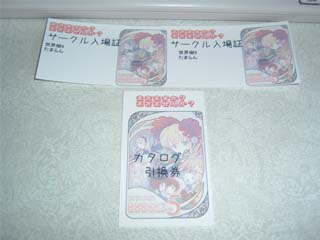
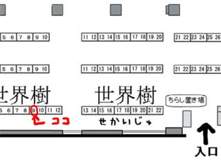

21時
>グラフィック何か手伝おうか？と思ったら元ネタ分からなかった…。 by皿洗い
ローゼンもワギャンも知らない人は知らないだろうからなぁ．気持ちだけ受け取っておくよ．ありがとう．
神経衰弱が出来上がりました．相変わらず画像は間に合わせのものですが，動作は完璧（だと思う）です．本当なら今日しりとりも出来上がっている予定だったんですが，神経衰弱を正常動作させるまでに想像以上に時間がかかり出来ていないままです．というか神経衰弱って思った以上に複雑なことやってたのね… 単純にパネルの取り合いをするだけならなんてこと無かった（いや，そりゃもちろん難しかったですがｗ）んですが，色々な場合に応じてセリフを変えるというアレを実現すると，恐ろしく複雑なフローチャートになったんですｗ あとは敵がパネルを記憶するわけですが，その管理方法も一筋縄でいかない部分が多くて大変でした(^^;
で，これはどう考えても体験版の配布にまでしか漕ぎ着けられないですね．もしかしたら製品版として出せるかも…と考えていましたが，見込みが甘かったようで(^^; 元々自分は締め切りに追われないと何も出来ない性分だからなぁ… これからは一週間の最初にノルマを設定して，それを達成するよう努力するというかつて採用していた方法を実行しようか（遅いよ）．
いやはや，ゲームを作ってる人たちは，本当に凄い．自分でやってみて，改めて実感．
この日記を書いているのは実は6日の午前4時だったりするわけで，もう学校が始まります．3年次です．明日（時刻的には今日）は授業1つで，しかも翌日からすぐに土日の二連休なので気が楽ですが．
時間がなくなるなぁ，と考えてしまうこともありますが，実際そんなに変わらないですよね．2月までの学校があった時期も，なんだかんだで今くらいの作業量はこなしていた気がします．拘束時間が減っても，一つのことに打ち込める時間というのはそれほど変わらないようです．不思議な感じ．
先日サモとファミレスで話し合いをして，今年一年にサークル参加してみたいイベントを考えました．
05/04 まきまき5（確定・会場東京）
06/24 まきまきex（未確定・恐らく参加・会場名古屋 ただし一次募集締め切りが04/09とヤバイ）
08/26 コミトレ10（会場大阪・募集締め切り07/11）
10/28 ComicCity in 大阪66（詳細は不明）
11/?? まきまき6（11月かどうかは不明・恐らく参加・恐らく会場東京）
12/?? C73（日程不明・参加は怪しい）
約2ヶ月に1回のペースです．まぁやるならこんなペースじゃないですかね．
後は代表と話し合って東方関連のイベントも組み込みたいところ．
それと近畿で開催されるローゼンオンリーイベントにも参加したいです．そんなのがあれば，の話ですが．
で，冬コミはやはり出たいんですが，正直なところ出るのが怖いってレベルじゃないです．結構微妙です．
まぁこんな感じでサークル「たまらん」はやってます．やっぱ楽しいわコレｗ
とりあえず残り25日．学校は本格的にスタートするため，約3時間/日の作業時間しかとれなくなる．時間的には問題なし．学校のレポートを手早く終了させるために日々の授業で寝ないことが重要．また復習による授業内容の定着も密かに重要．
以上の状態を鑑み，結論として私にはやはりイベントまで遊ぶ時間というものが存在しない，という旨が脳内に通達されたし．
げに残念なり orz
現在，移動・地形との当たり判定・一体しかいない敵との当たり判定という，おおよそアクションゲームと言うにはおこがましいレベルにまでしか達していないステージ部分のプログラムをひたすら弄ってます．…まだクラス設計をうんうん唸ってるだけの段階ですがね．
焦りは禁物．しかし作業は迅速に．
そろそろ，日記の更新もなくなりそうです．15日を過ぎたら，恐らく完全に途絶えると思います…
待たせたね！“か”だよ！
正直切羽詰ってるんだ．いや，切羽詰ってるから日記を書いてないわけじゃないから勘違いをしちゃいかんぞ！
日記を書く時間くらいどこにでもあるんだが，要するに言い訳を考えられなくてだな！
…まぁ，その，つまり，なんだ…
そうそう，配置が決まったそうだ．
世界樹09だそうだ．決して間違えちゃダメだぞ．こんなサークル（たまらん）と間違えられたサークルさんが不憫だからね．良い子の皆と，僕とのお約束だよ！
本日ついに「サークル案内」なるものが郵便（正確にはクロネコメール便）で届きました．

ついに ねんがんの サークルチケットを てにいれたぞ！
正直，これを自らの手で入手するのが小さな夢でしたｗ 達成…って言うのもなんだか変な気がしますが，達成出来て嬉しいです．
あと配置のことだけど，「世界樹09」というのは先日お話した通りです．んで具体的なその場所ですが…

プロデューサーさん！壁ですよ！壁！ …まぁ壁って言うのは宅配受付から一番遠い方の壁なんですが orz
そして入り口から超近いです！ …つまりここには客は留まらないだろうという考えからの配置なんでしょうが orz
詳細は公式ページをご覧になって下さい．
ところでサークル案内の中に次回まきまき6のチラシが入っていました．今年の11/25に都産貿の台東館であるようです．
台東にも同じ名前の建物があったんですね．初めて知りました．
もちろんこれも現状ではサークル参加の方向で．詳細はまた夏の終わり頃にでも（ていうか今の時点で詳細決めるとか無理っすよ）．
そして肝心の頒布物ですが，もう言うまでも無くヤベェ状態です orz
東方漫画（コピー本）の方はきっとあの二人なら仕上げてくれるでしょう．んが，如何せん今回のメインとも言える「金糸雀ランド」の方がどうにも ＼(^o^)／ です．今夜KIAIでドット打って，スクリーンショットを公開しようと思います．ようやくかよ．ていうか先週の日曜日にやる予定だったんじゃないのかよ（内輪話）．
あ，そうそう．頒布するブツね，きっと効果音が付かないよ．よくてBGMだけだよ．多分ムチャクチャやり辛いよ orz
やっべ，テンション上がって来た (*´∀｀)
ああ，それにしても金糸雀はなんでこんなに可愛いんだろう… (*´ω｀) 一度でいいから，一日中この娘の頭（やデコ）をナデナデするだけで過ごしたい…
うん，俺がゲームを作りたくなるのも無理はないですね（そのりくつは（ｒｙ
先日「自分達のサークルが僻地へ追いやられた！」…みたいなことを書いたんですが，どうやら世界樹エリアはヒナカナ系を集めたそうです．なぁーんだ．まきまきのスタッフ様，風評被害出して申し訳ありませんでした orz
え？別に誰もここ見てないから「風評」になってないとな？サーセンｗｗｗｗｗｗｗｗ
｜ ｀ヽ、 _ .. -—=＝=‐- .._ ､ミ川川川彡
｜ ＼ , ≠-———- .._ ＼ -ミ 彡
, -┴=＝——- .. _ 〉'´ ､ ｀ヽ ヽ三 ギ そ 三
. ／／´ ､ ､ / ､ ＼ ＼ ヽ. 三. ャ れ 三
{ / , -‐ァ＝＝=‐- .._ ヽ ∨ / 、＼ ＼ ＼ ヽ 三 グ は 三
＼／ ／ /, { ｀ヽ ! / }ヽ. ヽ、 ヽ、__ ..二、 三. で 三
, ' , ' ／/ ﾊ ｜ ﾄ､ |l { /二ヽ ｀¨¬ｘ=-ミ_‐┐ 三 言 ひ 三
/ /＿, ／ //∠=ヽ､ } lハlﾊ ｲィ::ｆ_} ＼ ´ ｖｲ} ´ /} 三 っ ょ 三
l / { ,ィf´ ノノ 7ｆ_ｊ｀ゞV } |__ﾊ {｀ ﾞｰ' ｀ ￣ ノ,′ /三. て っ 三
j∧ 「{kﾂ ﾞｰ' / ,′厂´ ＼ ヽ、 ｀ u / ｲ 三 る と 三
ヽ{ ｀ u. ノ / / ｛{爪 -:‐ ｰ=彡イ / 三 の し 三
八 ´｀ ｰ=イ ｆl / { ＼ ..:::::::::〈 / 三 か て 三
ハ＼ ...::::::| ｊハ{ ｛ ＋ ＼＿＿..:::::::::::::::::∨ ┼ 三 !? 三
＼{` ー‐､.:::::::::::| / { ＋ } / ∧:::::,. -‐/ 〃彡 ミ
｀ ｣::::::／ｊ /＼ /｛ ＋ } ≠ｘ 〉´ / ＋ 〃ｒ 彡川川川ミ
／x＝く ´ _ｆ〜､ / /Y´‐} 〃}}、 /´￣ Y 〃 ﾉ ハ ＼ ＼
ｆ＾ｱ 〃ﾉﾊ ヽ ﾉﾒ〜ヽ / / { ニ} {{ 〃}} {二 | 〃ｆ´ / } ヽ
どこかに移籍して続けるつもりがないのなら，気になる伏線だけは拾って終わって欲しいです．
具体的に言うと，
・究極の少女「アリス」とは何なのか（ローゼンの真意，アリスゲームの真意など）
・水銀燈がローザミスティカを欲する本当の理由
・ジュンの将来
移籍することで作品が続く方がローゼン界隈が盛り上がっていいんですが…
どんな作品もスティール・ボール・ランのように成功するとは限らないだろうからなぁ… そういやSBRも結構これと似た経歴だったよね．週間のジャンプで謎の長期休載の後，唐突にウルトラジャンプで連載再開！気付けばジョジョ第7部の称号をまとい，多くの荒木ファンが「納得」出来る超絶世界を毎月繰り広げている．
ローゼンメイデンも，どこか他誌に移籍してもこれまで通りの世界観を貫いて，今までのファンが「納得」出来る作品作りを続けて欲しいです．
俺は「納得」がしたいだけなんだ！「納得」は「誇り」に繋がる！
新機能とかは放置して，ゲームデータのアーカイブ化を行ってます．つっても画像とか音楽とかのアーカイブ化はよく分からないので自分で作ったデータファイルだけですが．そしてバイナリファイルの読み書きで色々戸惑ったり(^^; 普段使わないことはどんどん忘れます．
バイナリファイル化したデータを読んでいくときにシーケンシャルファイルアクセスだけでは読む順番に融通が利かないのでランダムファイルアクセスの方法（よく知らない）を使おうと思ったのですが，それなら所詮10kBもないデータなんで一旦全部コンテナに読み込んでしまってそれからプログラムで適宜インデックスを動かして処理してしまおうかと考えてます．楽な時代になったもんだ．
しかしそのためのクラスを新しく作るのも面倒なんで，これはまきまきexまでの課題っつーことで．現状ではフォルダ1つごとにデータをバイナリ化，アーカイブ化して，いままでテキストモードで内容を読んでいた部分を順次修正してる感じ．
関数の内部動作だけを変えて，それを呼び出す側には手を加えずに仕様変更を実現するという，そんな処理のサブルーチン化の恩恵のひとつをまともに享受したのはこれが初めてのような… 今までなんだかんだで不都合があったら全とっかえ（引数が足りないとか関数名がおかしくなるとかそんな理由で）だったしなぁ．
ちなみに「関数の再利用」「クラスの再利用」は未だにやったことがありません．以前やったのと同じような処理を別のプロジェクトでやろうとして以前のソースからコピーして引っ張ってくるときは，必ず性能向上の余地や，あるいは命名規約の変更がありました．再利用と言えば再利用ですが，あくまで「模倣」を繰り返しているだけかと．
まだまだプログラミング歴が浅いってことかなー．自分の中に「確立されたノウハウ」ってのをもっと築かなきゃなー．